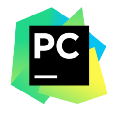

Which IDE's to use for python programming?
Python is a very popular programming language which is used throughout the world. With the increase in amount of people using python, there must be several IDE's which can be used in order to make the programming experience better. Python IDE's go from a sophisticated program that can be used on your computer, to an IDE that is preinstalled to the well known raspberry pi.
Python IDLE
PyCharm
Eclipse
Komodo
Spyder
Geany